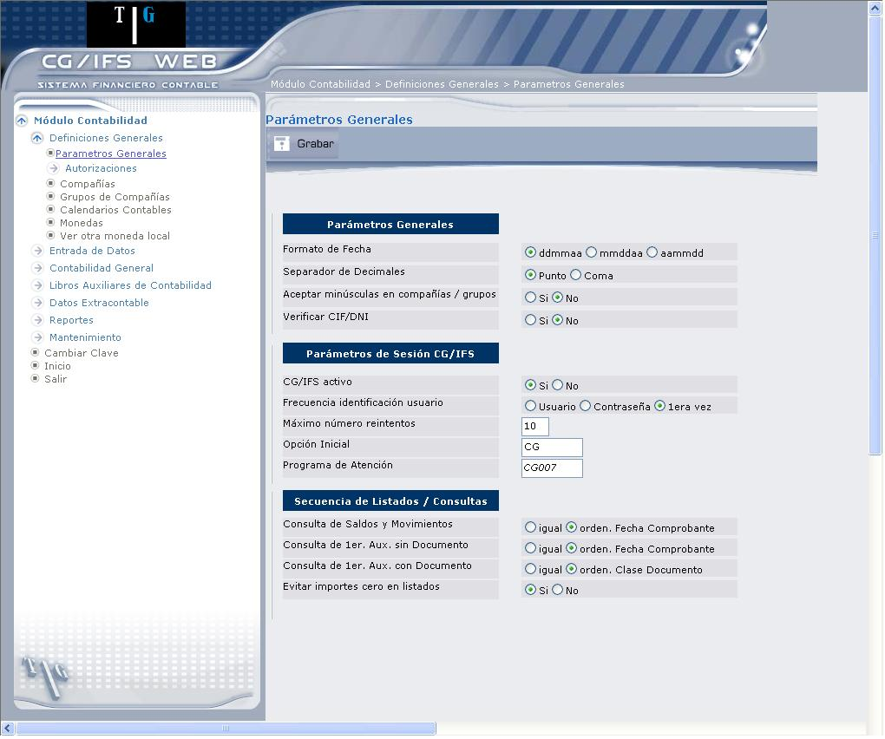

Parámetros Generales
Al ingresar a esta opción para definir los parámetros generales, se presenta la pantalla que muestra 1.2.

Figura 1. Parámetros Generales
PARÁMETROS GENERALES:
Formato de Fecha:
Marque con el ratón en el casillero de selección que corresponda al orden en el que desea que se edite o imprima la fecha (por omisión ddmmaa 🡪 dia/mes/año)
Separador de Decimales:
Marque dando clic en el casillero de selección que corresponda al caracter separador de los decimales que desee (por omisión punto).
Aceptar minúsculas en compañías / grupos:
Este parámetro permite disponer de más caracteres para definir Compañías/Grupos, ya que en caso afirmativo, se permitirá codificarlos con minúsculas (por omisión NO)
Verificar CIF/DNI:
Permite activar o desactivar de Validación del CIF/DNI. En caso que seleccione “Si”, en cualquier opción de menú donde se requiera el CIF/DNI se valida si el valor introducido es el correcto. Por omisión, dicha rutina sigue la fórmula utilizada en España, aunque se puede modificar según las necesidades de cada país.
PARAMETROS DE SESIÓN CG/Web:
CG/Web activo:
Permite desactivar el ingreso de usuarios, por ejemplo, puede ser útil cuando se desea realizar el BACK-UP.
Frecuencia identificación usuario:
Seleccione la frecuencia en la que se deberá identificar el usuario, así como la manera en la que deberá hacerlo (por omisión, usuario y contraseña).
Máximo número reintentos:
Digite el número de veces que se validará la contraseña antes de desactivar el usuario de CG Web en caso de sobrepasarlas (por omisión 10)
Opción Inicial:
Indica qué menú u opción aparecerá por omisión al conectarse en CG Web. En el caso de indicar directamente un programa, al salir de él se desconectará de CG Web (por omisión, CG).
SECUENCIA DE LISTADOS / CONSULTAS
Consultas de Saldos y Movimientos:
Marque con el ratón en el casillero de selección “igual” si desea que de Saldos y Movimientos de Mayor (GL.2.2) se ordene por Clase y Número de Comprobante en cada Año-Periodo; o en el casillero “orden”, si desea que de Saldos y Movimientos de Mayor (GL.2.2) se ordene por Fecha de Comprobante dentro de cada Periodo.
Consulta de 1er. Auxiliar sin Documento:
Marque con el ratón en el casillero de selección “igual” si desea que de Primer Auxiliar – sin Documento - (AX.2.2) se ordene por Clase y Número de Comprobante por cada Año-Periodo sin tener en cuenta ; o en el casillero “orden” si desea que de Primer Auxiliar – sin Documento - (AX.2.2) se ordene por Fecha de Comprobante dentro de cada Periodo.
Consulta de 1er. Auxiliar con Documento:
Marque con el ratón en el casillero de selección “igual” si desea que la consulta de Primer Auxiliar – con Documento - (AX.2.2) se ordene por Clase y Número de Documento sin tener en cuenta ; o en el casillero “orden” si desea que de Primer Auxiliar – con Documento - (AX.2.2) se ordene por Clase de Documento, teniendo en cuenta que Clase se utiliza como Año.
Evitar importes cero en listados:
Marque con el ratón en el casillero de selección correspondiente: ´Si´ si desea evitar los importes cero en los listados, caso contrario marque el casillero ´No´.
Created with the Personal Edition of HelpNDoc: Easily create EPub books